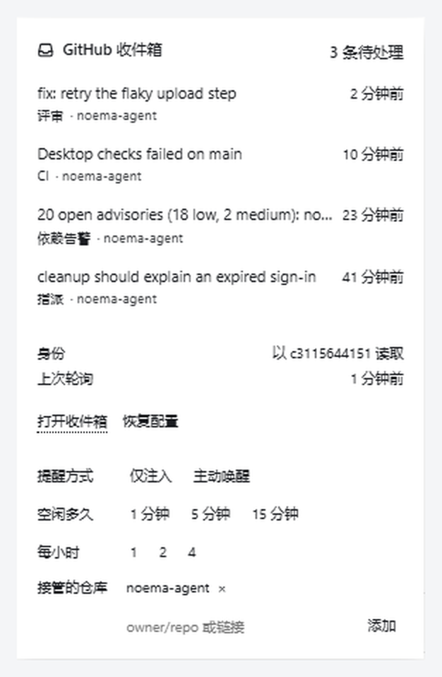

GitHub inbox
dsh-inbox-bridge · DSH 插件
dsh-inbox-bridge 让每个会话自己盯 GitHub：它提的 PR 被评审、CI 挂了、派给它的 issue 有人回、评论里有人 @ 它，都会在下一轮自动进入上下文；会话空闲又遇到要紧的事，它还能自己开一轮去修。只读，不改仓库。

为什么需要它
用 agent 写代码，仓库里的工作并不跟着对话走。一次 CI 要跑几分钟到几十分钟，这期间 agent 已经在改别的东西，失败发生时它看不见；PR 等人评审、issue 等人回应，同样没人接手。等想起来去翻，往往已经过了最该修的时候。
它的意图是把这件事交给 agent：每轮取一次数，把「需要你动手」的事实带进上下文——CI 挂了就修，有人请你评审就审，指派给你的 issue 就接。开发本身和仓库维护不再互相打断，agent 像维护者一样把仓库维持在健康状态。
它做什么
- 按身份判断相关性。用它自己的身份查 GitHub，只留它是作者、评审人、指派对象或被提及的事。
- 自己的工作跟人走。在别的仓库提的 PR、被指派的 issue、被 @ 的评论，也一样会送回来——不限于它所在的仓库。
- 接管仓库。一个会话接管一个仓库之后，仓库级信号（默认分支的 CI、安全告警、新开的 issue）只给接管的会话；工作区里的第一个会话自动接管它所在的仓库。
- 两级归属。仓库级事实只给接管者；条目级事实给在仓库里干活的会话，没有就落到接管者、再落到最近说话的那个——同一条事实只叫一个会话。
- 轮询跟随回合。开始时一次、进行中每 1 分钟一次、结束时一次；没人接管的仓库不被访问。
- 消息只有事实。一句抬头加每条一行「要对它做什么」，不写插件自己的机制。
- 顺手清掉读过的。收到的事件标已读；仓库级事件归档到 Done。归档默认开着，只需要登录一次浏览器，插件会自己弹窗口。
它不做什么
- 不合并、不评论、不修改仓库，只读。
- 不仲裁并发：两个会话都动手时它管不了，它只保证一条事实只叫一个会话。
- 不读 GitHub 通知箱，也就不追「账号上的消息」；只看仓库里发生的事。
- 默认不主动开一轮对话，`delivery: wakeup` 才开，且有五道门。
安装
需要 DSH，以及一个已在本机登录的 gh（gh auth status 可验证）。
从插件市场：在 DSH 的「插件 → 发现」里添加索引源，地址填下面这一行，然后在列表里安装 GitHub inbox。
https://c3115644151.github.io/dsh-inbox-bridge/index.json
从源码：
git clone https://github.com/c3115644151/dsh-inbox-bridge dsh plugin add ./dsh-inbox-bridge
从 npm：
dsh plugin add dsh-inbox-bridge
安装后在插件配置里指定工作目录 cwd；仓库与身份都从该目录的 git remote 与 gh 读取。会话第一次出现时自动接管它所在的仓库，之后的会话默认接手条目级的事。
配置
| 键 | 默认 | 作用 |
|---|---|---|
cwd | DSH 进程工作目录 | 状态文件位置；推断仓库的起点 |
repo / repos | 空 | 实例级接管；平时由会话自己接管，不用写 |
delivery | quiet | quiet 只注入；wakeup 空闲时也能开一轮 |
roles | 空（全收） | 只关心某些角色：author、reviewer、assignee… |
clear | repo | 读到的事件标已读：repo 自己的仓库、all 整个账号、off 不动 |
sweep | 开 | 有新的仓库级事实时把收件箱归档到 Done，需先登录一次浏览器 |